首页 / 使用手册
ClipKnife 使用手册
更新时间：2026-10-22
适用版本：Windows x64，v2.5.0；需要配套组件的能力以该版本发布清单为准
ClipKnife（素刀）是一款本地素材管理、智能检索与辅助创作工具。你可以把分散在文件夹、盘符和外接硬盘里的图片、视频、音频素材加入素材库，通过自然语言快速找回内容，再使用创作助手整理素材、生成文本或配音、创建和编辑剪映草稿。工具箱还提供文本转语音、图片清晰化、视频增强和批量视频拆分镜能力。
本手册按真实使用流程编写。涉及截图的位置已经标出文件名，你可以后续把图片放到对应目录。
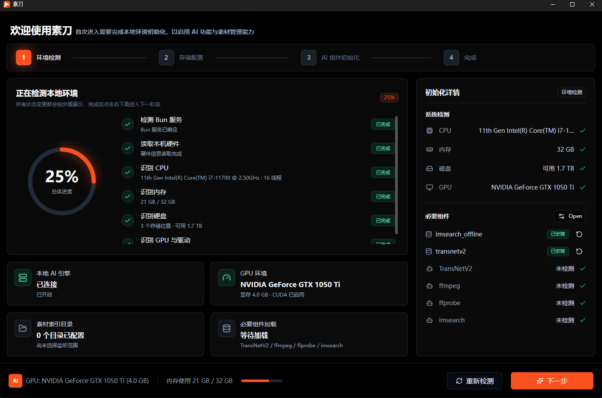
1. 开始前先了解几个概念
素材源
素材源是 ClipKnife 扫描和监听的本地范围，可以是文件夹、整个盘符或外接硬盘路径。一个素材源不可访问时，ClipKnife 会提示异常，但不会影响其他可用素材源继续工作。
素材库
素材库是多个素材源汇总后的统一空间。你在素材库看到的是所有已入库素材，而不是某一个目录。当前支持图片、视频和音频。图片包括常见位图，以及 DNG、CRW、CR2、CR3、NEF、NRW、ARW、SRF、SR2、RAF、ORF、RW2、RWL、PEF、PTX、SRW 相机 RAW 格式；通用 .raw 扩展名不在支持范围内。
AI 索引
AI 索引让素材可以被自然语言搜索。图片会进入视觉检索索引；视频会先分镜，再抽取代表帧进入视觉检索索引；音频会转写成文本后进入语音检索索引；开启视频语音转写后，视频中的语音内容也可以被搜索。
分镜
分镜是视频被自动切分后的片段。每个分镜包含起止时间、代表帧、状态和可编辑信息。分镜可以被搜索、预览、标注、加入项目和导出。
项目
项目用于临时组织素材和分镜。你可以把素材或分镜加入项目，再从项目中拖拽到外部创作软件或导入区。移除项目条目不会删除原始素材文件。
2. 首次启动与初始化
第一次打开 ClipKnife 时，应用会检查本地初始化状态。如果状态还不是 ready，会进入初始化流程。
初始化会完成三件事：
- 选择素材监听范围。
- 配置素材索引目录。
- 初始化本地 AI 组件和必要运行状态。
建议按下面顺序操作：
- 打开 ClipKnife。
- 在初始化页面添加第一个素材源，可以选择素材文件夹、盘符或外接硬盘路径。
- 确认索引目录，保留默认位置即可，除非你希望把索引放到空间更大的磁盘。
- 等待本地 AI 组件初始化完成。
- 初始化成功后进入主工作台。
注意：初始化期间关闭窗口可能中断流程。若页面提示可以最小化到托盘，优先使用最小化而不是直接退出。
仅搜索其他电脑的共享素材库
提供“局域网共享”入口的版本支持此流程；旧版安装包请以对应版本说明为准。完成正常激活后，在初始化页点击“仅使用共享素材库”，填写共享端的局域网 IPv4 地址、端口和配对码，先点击“测试配对”，成功后设置可选路径映射并保存。保存连接后可直接搜索，无需在这台电脑安装本机 AI 组件、拉取索引或重复建库。
“共享本地素材设置”不再提供“仅使用共享素材库”的切换入口，已有模式配置保留。该模式暂停本机建库、索引和素材监听，保留已有配置与本机素材库；关闭后恢复本机使用。共享端离线或连接被移除时不会自动转为本机建库。
在局域网内共享 NAS 或各自电脑上的素材
共享端可以发布本机文件夹、可访问的 NAS / SMB 目录或外接盘素材。两台电脑也可以相互发布、相互连接；电脑素材无需先放到 NAS 或设置系统文件共享。
- 在负责索引的素刀中添加素材源并完成建库。对于同一个 NAS 素材目录，由一台电脑维护索引即可。
- 打开“系统设置 → 局域网共享”，点击右上角“设置”，在弹窗中依次设置共享库名称、局域网地址、共享端口（默认 3024），勾选允许访问的目录并保存。所有配置直接展开，右上角开关可直接启停已有共享配置。
- 在局域网共享主页面查看本机共享 IP 和端口。共享服务运行后，点击“生成配对码”，在独立弹窗中查看、复制配对码，通过可信方式交给需要访问的用户。配对码有效期为 5 分钟，仅能使用一次；过期后可点击“重新生成”。
- 其他电脑点击“添加其他素材源”，在弹窗填写名称、局域网 IPv4 地址、端口和配对码，点击“测试配对”。测试成功后点击“下一步”，查看共享目录、设置可选路径映射，再点击“保存”。测试本身不添加连接；测试结果有效 10 分钟，取消或关闭弹窗会清理未保存会话。保存后在智能搜索顶部选择对应共享库，可输入描述搜索或查找相似素材。
- 点击结果预览；点击“使用原文件”后，素刀按需下载完整文件，并在完成后打开所在目录。下载进度、暂停、取消和重试在任务中心管理，中断后可继续已有下载。
搜索与索引均由共享端执行；客户端只保存连接配置和按需下载的素材副本，不同步索引。每次搜索选择一个素材库，当前不合并多台共享端的搜索结果。共享端的素刀需要保持运行、授权有效、素材目录可访问；客户端也需要正常激活。防火墙需允许所选共享端口的局域网访问。
客户端与共享端均使用支持完整共享搜索的版本时，共享搜索与本机使用相同的搜索界面和高级检索选项：素材类型、素材来源、指定视频、画面方向、检索模式、结果多样性和搜索质量。指定视频仅列出对方已发布的视频，可以按文件名查找。切换素材库保留搜索词和通用选项，素材来源与指定视频需在新库重新选择。
点击共享视频进入只读视频详情，直接定位搜索命中的分镜或语音时间。可以播放视频、继续加载分镜、查看已有标签、备注、画面描述、字幕和词级时间戳；关闭详情后回到原搜索位置。详情中的“使用原文件”沿用路径映射或下载流程，不提供远程编辑、索引清理和分镜导出。
点击搜索框旁的“以图搜图”可选择不超过 10 MiB 的 PNG、JPEG、WebP、GIF、BMP 或 TIFF 图片，由当前共享端执行搜索。查询图片会发送至该共享端，临时文件在处理结束后清理。本版局域网共享要求双方升级到新版素刀并重新配对，不连接旧版共享端。
如果客户端已经挂载同一个 NAS / SMB 目录，可以在“其他素材源”列表中点击对应行，编辑目录映射，将共享端素材源对应到本机可访问的根目录，例如 Z:\素材 或 \\NAS\素材。相对路径、文件大小和修改时间匹配时使用映射文件；目录离线、文件缺失或版本不匹配时，改为从共享端传输。请只映射同一份素材目录，不要把同名的其他素材目录当作替代。
共享默认关闭，仅适用于可信局域网。本版使用 HTTP 明文传输，不使用证书或指纹校验；连接配置和访问凭据在本机明文保存。共享端可以在“共享本地素材设置”下方的“已配对设备”中撤销连接。搜索词和主动选择的查询图片会发送给选定的局域网共享端，结果元信息、分镜、字幕、缩略图、预览和原文件会按操作在两台设备间传输，不经素刀公网服务中转。只有所选素材源提供只读访问；共享结果暂不提供远程标签编辑、分镜导出或加入本机项目。
编辑素材源弹窗“更多操作”中的“清理下载副本”会取消该共享库的未完成下载，并删除素刀保存的完整和未完成副本。它不会删除 NAS 映射目录、共享端原文件或其他共享库的副本。移除连接保留已有下载副本，建议需要释放空间时先清理再移除。
若升级后提示“共享配置需要重新设置”，旧版加密配置会原样保留，不再解密。确认重新配置后共享默认关闭，需要重新勾选发布目录、配对和设置映射；原始素材、索引和下载副本保留。
3. 添加和管理素材源
素材源管理用于告诉 ClipKnife 去哪里扫描素材。
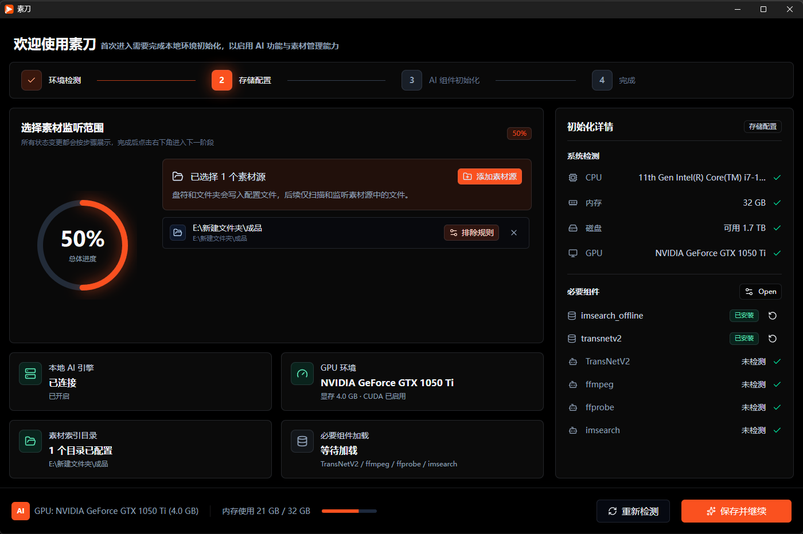
你可以从这些入口进入素材源管理：
- 首次初始化流程。
- 素材库空状态。
- 系统设置中的素材源管理。
- 其他引导入口。
添加素材源时，ClipKnife 会做预检：
- 路径是否存在。
- 路径是否可访问。
- 是否与已有素材源重复。
- 是否与已有素材源存在父子路径重叠。
- 是否是盘符或外接盘等扫描范围较大的路径。
如果预检发现风险但仍可继续，ClipKnife 会要求你确认。比如添加整个盘符时，建议先确认排除规则，避免扫描系统目录、缓存目录、开发依赖目录和 ClipKnife 自身工作目录。
素材源列表会展示访问状态、扫描状态、监听状态和最近更新时间。你可以启用、停用或移除素材源。移除素材源只会移除 ClipKnife 对该路径的管理，不会删除原始文件。
4. 建库、监听和后台任务
添加素材源后，可以启动初始建库。初始建库会扫描已启用素材源，把支持的图片、视频和音频加入素材库，并创建后续索引任务。
相机 RAW 图片会像其他图片一样参与扫描、监听和视觉索引。缩略图、全屏预览和索引图像均在本机生成：ClipKnife 会优先使用 RAW 文件内嵌的预览图，必要时再解码相机传感器数据，不会修改原始文件。具体相机型号能否解码取决于应用内置 LibRaw 的支持范围。已有素材源不会因为升级自动全库重扫；请在素材源管理中再次扫描，之后新增或修改的支持格式也会由监听发现。
监听用于捕获后续变化。当素材源里新增、修改或删除文件时，ClipKnife 会把变化加入后台任务队列，避免素材库长期与本地文件不一致。
建库和索引可能需要时间，尤其是素材较多、视频较长或开启语音转写时。你可以在任务中心查看进度和失败原因。
5. 浏览素材库
素材库是浏览、筛选、预览和进入详情的主入口。
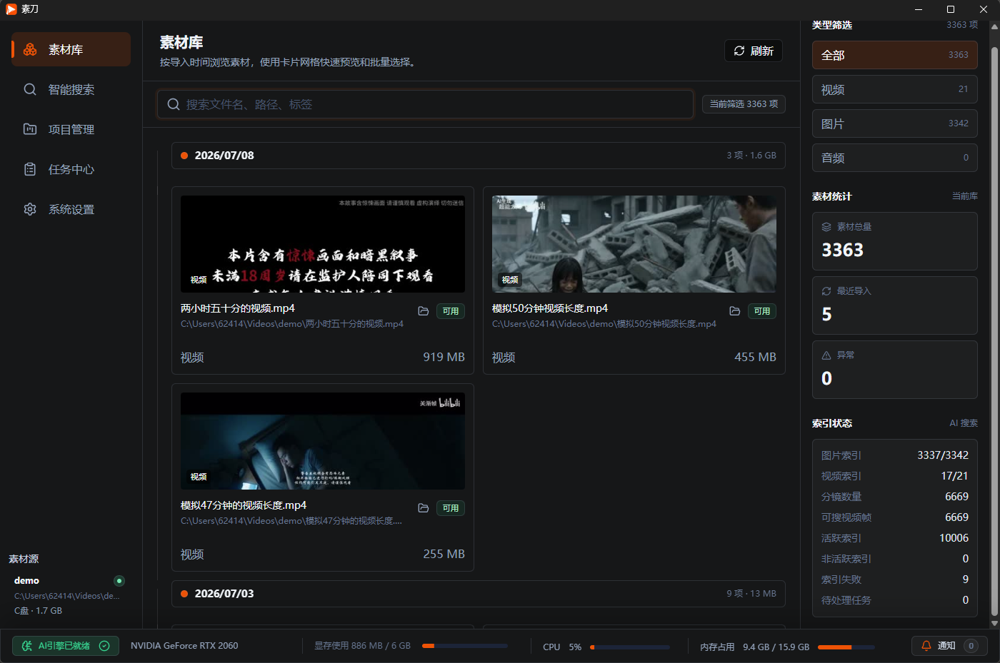
素材库通常会展示：
- 素材总量。
- 图片、视频、音频数量。
- AI 索引相关统计，例如已索引、待处理和失败数量。
- 素材卡片网格。
你可以在素材库中搜索文件名、路径和标签，也可以按素材类型筛选。这里的搜索主要基于素材元信息，不等同于智能搜索。
素材卡片常见操作包括：
- 选择素材。
- 打开原文件。
- 打开所在目录。
- 查看详情。
- 预览图片、视频或音频。
素材详情会展示文件基础信息、路径、索引状态和处理结果。图片详情关注图片索引状态；视频详情会展示分镜数量和已索引帧数量；音频详情会展示转写内容和索引状态。
6. 使用智能搜索
如果你想知道“剪视频找素材很慢、几千个视频素材怎么按内容管理”这类场景问题怎么解，先看：按内容搜索视频素材（场景说明）
智能搜索让你用自然语言找本地素材。你不需要理解模型、索引或分镜流程，只需要输入画面或语音内容描述。
智能搜索的文字匹配来自独立标题、标签、描述、字幕、语音转写和已提取的画面文字。文件名和路径用于展示及定位，不参与内容匹配和相关性排序；按文件名或路径找文件，请使用素材库搜索。
中文内容连续命中两个字也可以进入候选结果，较长的连续匹配通常更靠前。仅命中一个字、跨字段或被标点隔开的字不会拼成连续两字匹配；候选数量和去重规则仍会影响最终展示的结果。
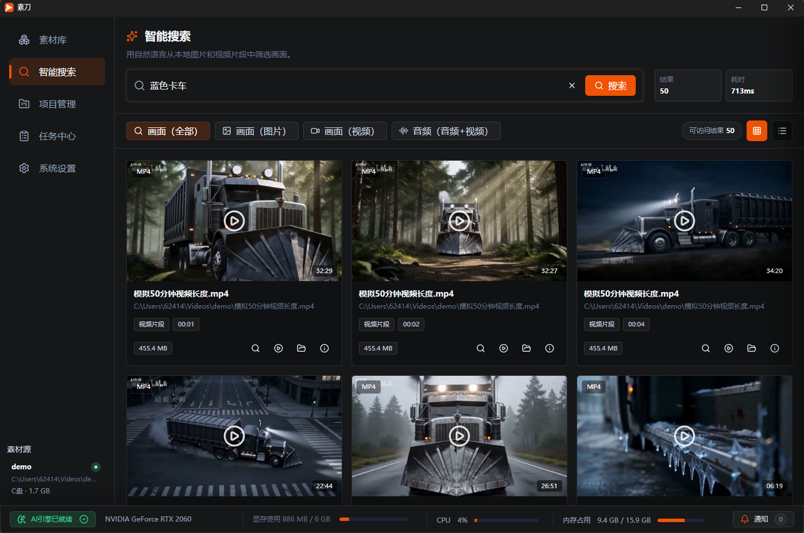
智能搜索支持以下模式：
- 全部：混合返回图片、视频片段和音频结果。
- 图片：搜索图片素材。
- 视频：搜索视频分镜代表帧或视频语音片段。
- 音频：搜索音频素材和视频语音内容。
可以输入中文或英文描述，例如：
- 海边日落。
- 红色包装特写。
- 一群人在河边喝水的大象。
- 会议里提到预算调整。
搜索结果会展示缩略图或媒体预览、文件名、路径、匹配类型、相似度或相关性信息。视频结果会显示片段起止时间；音频和视频语音结果会显示转写文本。
首次建库时不必等待全部索引任务完成，构建开始后即可发起搜索；首批素材完成所需索引并成功写入后，搜索就能返回这些素材。当前结果只覆盖已经完成的部分，并会显示索引仍在构建的提示；仍在处理或处理失败的素材不会提前出现在结果中。继续处理后，再次搜索会逐步包含更多素材。已有索引上的全量重建仍使用旧索引，完成校验后再自动切换。
升级旧版文本索引时，应用会自动创建“文本索引补建”后台任务，可在任务中心暂停、继续或重试。升级完成的内容会逐步恢复文本搜索，画面搜索仍可使用。任务复用已有描述和转写，不会重新转写、生成画面描述或修改原始素材；重启后会继续已保存的进度。
如果搜索没有结果，可以检查：
- 是否输入了明确描述。
- 目标素材是否已经完成索引；首次建库中的未完成素材暂时不会出现在结果里。
- 当前搜索模式是否过窄。
- 素材源是否断开或文件是否被移动。
- 搜索服务是否可用。
7. 使用以图搜图
图片结果和视频代表帧结果可以作为相似检索入口。你可以从当前结果触发以图搜图，查找视觉上相近的素材。
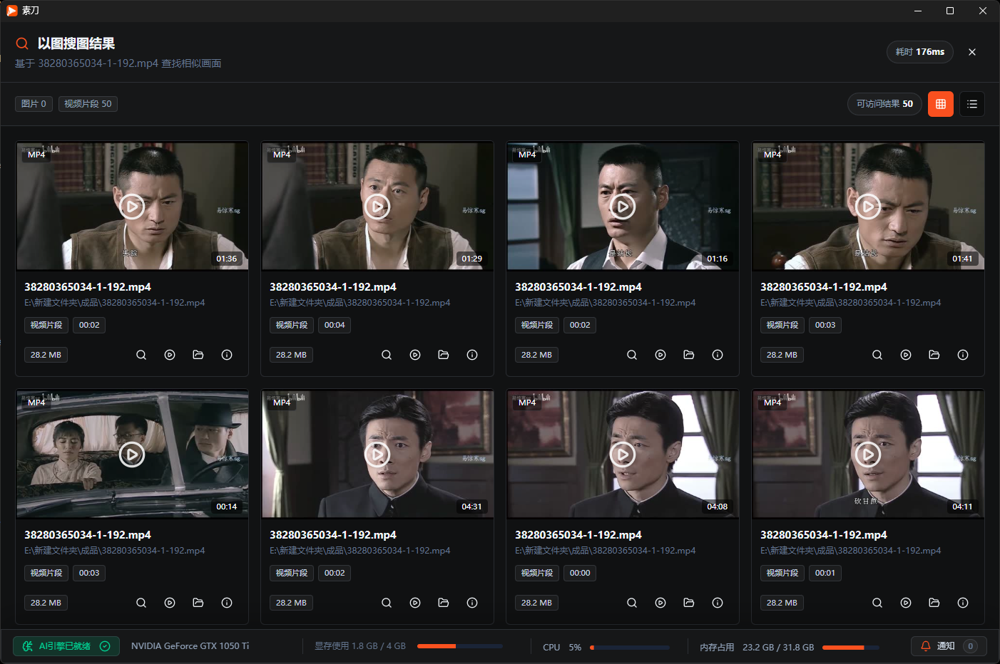
如果结果缺少可用的相似检索索引 ID，ClipKnife 会提示需要重新构建 AI 索引。此时可以先查看任务中心或诊断入口，确认相关索引是否失败或失效。
8. 视频详情与分镜
从素材库或智能搜索的视频结果可以进入视频详情页。这里用于播放视频、查看分镜、编辑标签和导出片段。
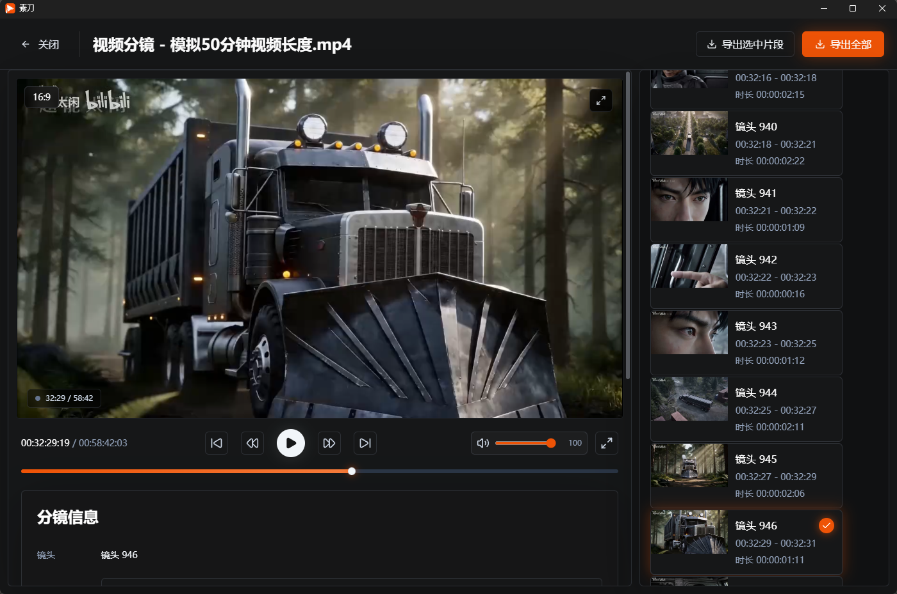
视频详情通常包含：
- 视频预览播放器。
- 分镜列表。
- 当前分镜起止时间。
- 分镜代表帧。
- 标签、已有画面描述、字幕和转写文本。
- 导出入口。
当前可用编辑仅限分镜标签，可以添加或删除标签；不提供备注、起止时间调整、合并、拆分或删除分镜操作。工具箱“批量视频拆分镜”是自动导出全部镜头的独立功能，不是这里的手工分镜编辑。
标签编辑作用于素刀的分镜记录，不会改变原始视频内容或时间线。
导出片段时，可以导出选中片段，也可以导出全部片段。导出会创建后台任务，并把结果写入指定输出目录。导出成功后，你会看到导出路径。
9. 音频与语音检索
ClipKnife 支持把音频作为素材库的一类资源。音频素材可以播放、查看详情，并通过语音转写参与搜索。
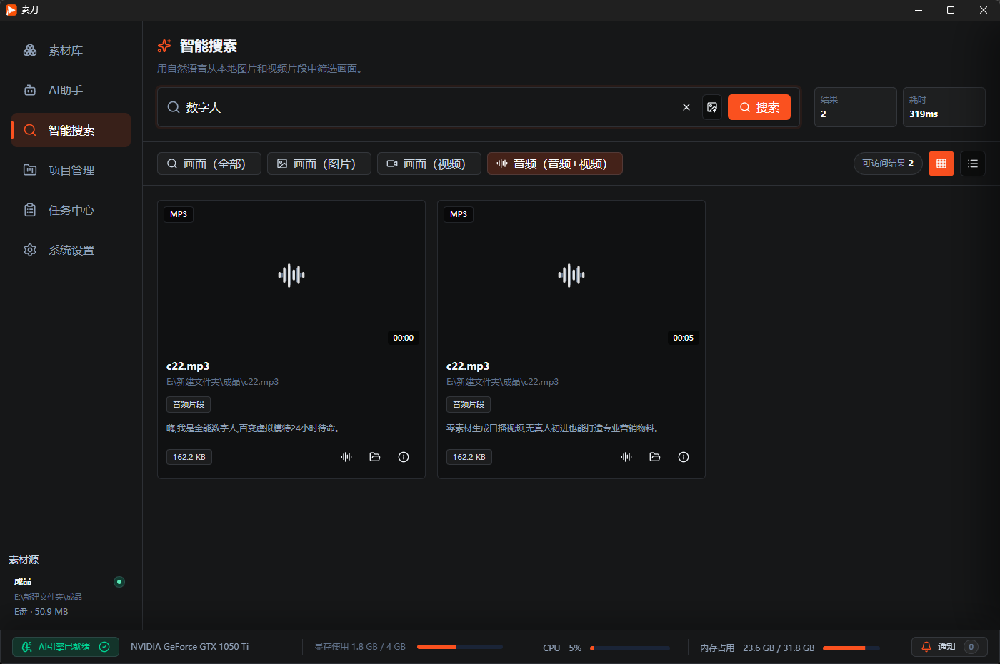
音频语音转写和视频语音转写是两个独立开关，默认均关闭。首次开启任一开关时，素刀会先展示本机可用的加速后端、时间戳精度、准确下载量以及磁盘和显存要求；确认并完成下载、校验和本机自检后，开关才会真正打开。取消或安装失败不会悄悄打开转写。
当前固定使用 Qwen3-ASR-0.6B Q8_0。近似模式按 30 秒音频块生成可搜索的段级时间范围；精确模式还会按需下载 Qwen3-ForcedAligner-0.6B Q8_0，生成可以在视频详情中展开查看的词级时间戳。兼容且总显存至少 8 GB 的显卡默认提供精确模式；系统或驱动因保留区而报告略低于标称容量时，素刀会按容量档识别，运行预算和本机自检仍以实际报告值为准。6～8 GB 兼容显卡默认使用近似模式，也可以主动选择实验性精确模式，但必须先通过本机显存自检。没有兼容 GPU 时，系统内存至少 16 GB 才提供 CPU 近似模式，且不承诺实时速度。
语音资源不会随安装包预装，因此首次启用需要联网下载。安装完成后，转写、词级对齐和索引都在本机运行，不会因为这些操作上传原始音频、视频或转写文本。显存充足且通过共驻留自检时，imsearch 可以保持驻留，但 ASR 与 Aligner 仍会依次加载而不会同时常驻；共驻留显存不足时，素刀会先处理完当前图像搜索相关工作，暂时卸载 imsearch 模型，再依次完成 ASR、Aligner 并恢复 imsearch。单独阶段仍放不下时任务会等待可用显存，不会静默改用 CPU 或降低时间戳精度。
关闭转写开关会停止或取消对应任务，但不会删除已经下载的模型。只有在设置页明确选择“删除语音模型”时，素刀才会关闭两个转写开关、停止语音运行时，并只删除应用专属的 ASR/Aligner 目录。
语音搜索基于转写文本。你可以搜索音频中的语音内容，也可以在开启视频语音转写后搜索视频中的语音内容。视频语音片段仍保留视频身份，方便你回到视频上下文。
10. 项目管理
项目用于把分散找到的素材或分镜组织成可拖拽的工作集合，适合剪辑、设计和素材整理流程。
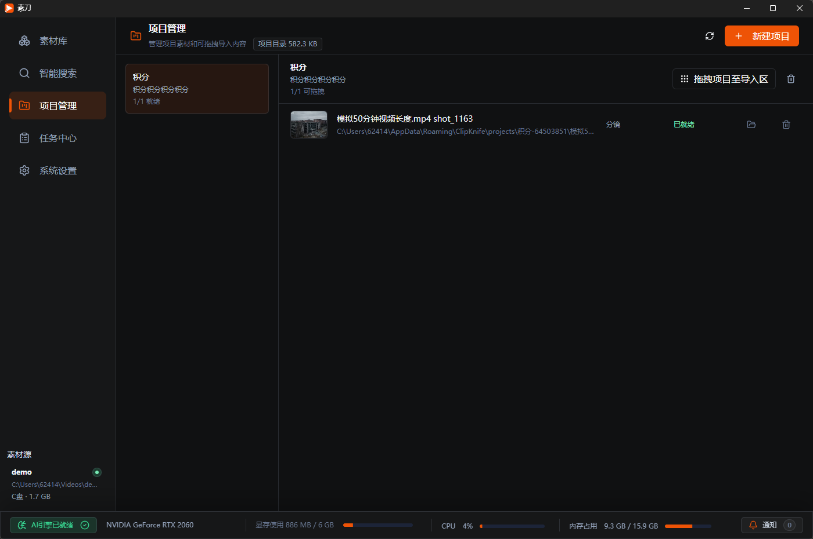
使用项目的一般流程：
- 创建项目，填写项目名称和描述。
- 从素材库、搜索结果或视频详情把素材加入项目。
- 在项目详情中查看素材和分镜条目。
- 将项目内容拖拽到外部创作软件或导入区。
项目条目会显示类型和状态，例如素材、分镜、就绪、处理中或失败。只有已就绪的项目条目会进入拖拽载荷，缺失或未就绪条目会被跳过。
删除项目会删除项目记录和项目文件夹中的导出内容，操作不可撤销。从项目中移除素材只影响当前项目，不会删除原始素材文件。
11. 使用创作助手
创作助手提供“智能口播”和“通用专家”入口。“智能口播”按文案、分段配音、画面匹配与草稿组装的流程创作；“通用专家”处理素材检索、媒体分析和自由剪辑。两者都交付可继续编辑的剪映草稿，不提供成片导出。旧版未标注专家的历史会话保留并归入通用专家。
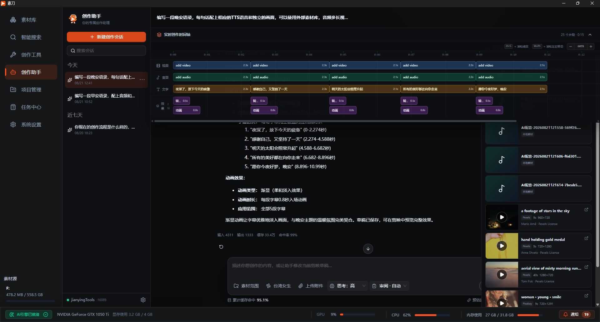
首次配置
由于剪映6版本以上的草稿进行了加密处理，本软件无内置解密算法，故仅能新增草稿，无法编辑加密草稿，或者用户自行接入解密算法以支持编辑加密草稿，或使用剪映5.9版本
第一次使用前，打开“创作助手设置”：
- 在“通用设置”中确认剪映草稿目录。助手不需要设置成片导出目录。
剪映草稿目录从哪里获取，打开剪映，找到全局设置，找到“草稿保存目录”
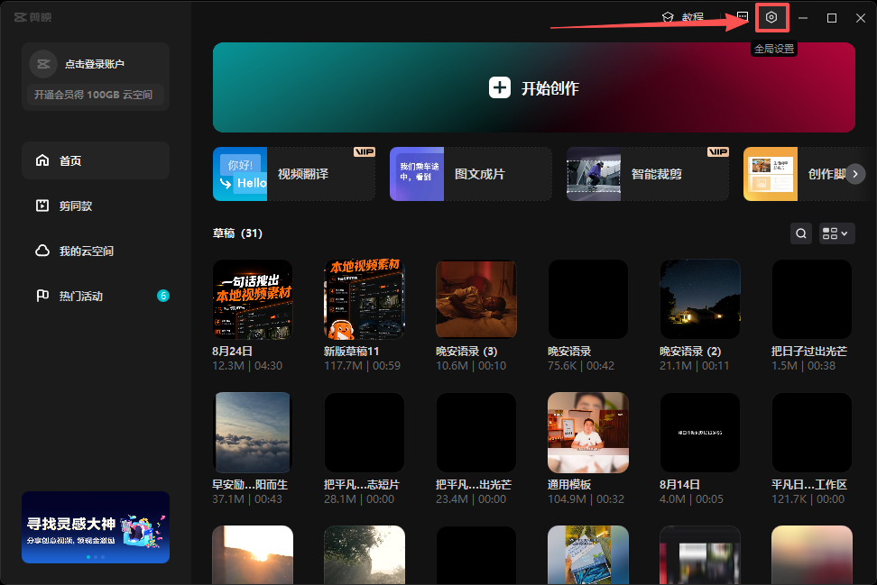
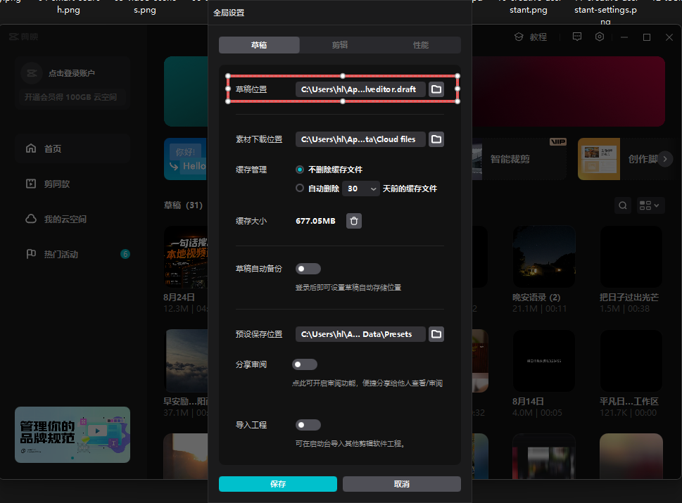
- 在“模型配置”中选择一个内置供应商，或添加支持 OpenAI Compatible 协议的自定义供应商。
- 填写 API Key、选择模型和思考强度，然后点击“测试连接”。
- 测试成功后将该配置设为默认。修改默认模型后，当前及历史会话从下一次模型请求开始使用新配置；正在执行的请求不会中途切换，会话上下文继续保留。
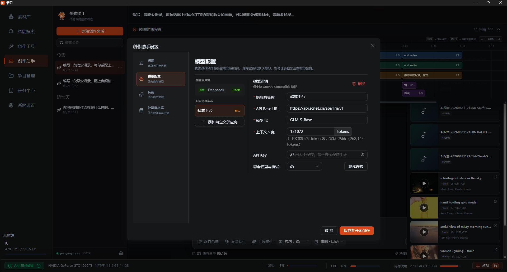
左侧的“内置供应商”由素刀服务内置，可以快速选择配置；“本地配置”保存你自行添加的供应商，以及服务端已经移除但你仍在使用的旧配置。内置供应商的名称、API Base URL、模型列表和上下文长度由服务端维护，API Key、思考强度和默认选择仍只保存在当前设备。
没有想用的内置供应商时，点击“添加自定义供应商”，填写名称、API Base URL、模型 ID、上下文长度和 API Key。自定义供应商可以自行输入模型 ID 和上下文长度，但仅支持 OpenAI Compatible 协议；上下文长度默认是 256k（262,144 tokens）。删除自定义供应商前，素刀会再次提示确认；删除后历史会话内容仍会保留，但依赖该供应商的历史会话无法继续对话。暂时离线时，素刀会优先使用同一远程服务最近一次成功获取的供应商目录；首次离线且没有缓存时，仍可继续使用已有本地配置或添加自定义供应商。
服务端修改内置供应商的名称、Base URL 或所选模型的上下文长度后，关联配置会自动同步这些公开信息，但不会覆盖你的模型选择、API Key、思考强度和默认选择。服务端移除供应商后，已经配置的项目仍保留在“本地配置”中。
新建会话与选择素材
先选择专家，再描述目标并提交有效任务，此时才创建会话。每个会话固定使用创建时选择的专家；你也可以选择草稿、添加本地文件或从素材库附加素材。创作助手可以：
- 按描述搜索素刀中的图片、视频、音频和相似素材，并复用已经生成的视觉描述。
- 把图片或视频搜索限制在一个素材目录中；音频搜索仍覆盖当前素材库。
- 使用你明确附加的本地文件。附加文件不受上述素材目录范围限制。
- 使用内置 TransNetV2 分析视频镜头并精确导出所需片段，或在媒体沙箱中调用 FFmpeg 处理已授权素材。
- 视觉辅助模型已在设置中启用时，按任务需要理解图片或视频画面；分镜综合 1/4、1/2、3/4 位置最多三帧，不发送完整视频。
- 在没有指定现有草稿时创建一个不重名的新草稿；只有明确选择或点名现有草稿时才会编辑它。
为了获得更稳定的结果，建议在一条消息里说明成片用途、时长、画幅、要使用的素材范围、文案语气和期望输出。创作助手会把搜索结果、工具输出和草稿状态带入后续对话，你也可以在执行过程中继续发送修正要求。
自动模式与询问模式
- 自动模式：创作助手会连续执行常规步骤，不逐项询问；智能口播不停在文案和分镜确认点。是否使用外部素材由全局设置和会话开关控制。
- 询问模式：关键信息不足时集中确认；智能口播保留文案和分镜两个检查点，可以预览配音与候选画面。修改文案时只重做受影响部分，更换画面时保留已有配音。
无论使用哪种模式，删除草稿都需要明确批准。询问模式在覆盖已有内容前会先确认；自动模式会优先使用不冲突的名称，避免覆盖已有结果。
使用外部素材
在“创作助手设置 → 外部素材库”中，通过“使用外部素材库”开关控制，默认关闭。所有未单独设置的会话会持续跟随最新全局配置。你也可以在会话的“素材范围”弹窗中单独开启或关闭，并通过“恢复全局设置”重新跟随全局；点击“保存”后生效，不要求同时选择本地目录。会话设置会在重启后保留。历史会话旧的文字或授权卡决定不再生效，统一跟随全局。
开关开启后，助手可按需检索和下载外部图片、视频及音频，消息中的允许或拒绝不会改变开关。任务运行中也可修改外部开关，保存后从下一次外部请求开始生效；已开始的请求正常结束，已下载素材保留。询问模式仍保留素材选择确认。
需要补充本地素材库之外的内容时，创作助手可以搜索 Openverse、Wikimedia Commons、Pexels、Pixabay、Coverr、Jamendo 和 Freesound。部分来源需要你在“创作助手设置 → 外部素材库”中填写对应密钥，密钥只保存在当前设备。
搜索结果会尽量保留来源、作者和许可信息。选中的外部素材会下载到当前会话工作区。发布作品前仍应自行核对授权条件、署名要求、商用范围和素材内容是否合规。
创建、编辑和交付剪映草稿
创作助手可以新建、打开和编辑剪映草稿，并完成常见操作，包括：
- 添加图片、视频、音频、文字、贴纸、特效和滤镜。
- 调整轨道、片段时序、动画、转场、蒙版、关键帧、淡入淡出和背景。
- 替换模板素材或文字，导入 SRT 字幕，并保存草稿。
- 调用已安装的文本转语音工具，将生成的 WAV 文件加入独立的“AI配音”轨道；明确要求只生成文件时不会修改草稿。
- 调用视频拆分镜、视觉描述和受限 FFmpeg 工具，生成当前会话可继续使用的本地媒体结果。
在“设置 → 视觉辅助模型”中可选择本地 MiniCPM-V 4.6 或外部视觉 API。支持本地视觉的版本需要 Windows x64 与兼容的 NVIDIA 显卡，至少 4GB 显存、推荐 6GB；不提供 CPU 推理。先检查下载方案，再确认按需下载运行时、CUDA 依赖、模型与投影器；可复用的 CUDA 文件会校验后复用，用户无需安装 Python 或完整 CUDA Toolkit。组件可用性以对应版本的发布清单为准，尚未提供组件或硬件不兼容时使用外部 API。
安装进度和取消在设置页与任务中心查看，校验及自检成功后才启用，失败或取消会回滚。可以停止本地引擎或删除本地组件，原始素材和已有描述保留。视觉、图像检索与 CUDA 语音会排队使用显卡；描述前释放本地图像模型，完成后恢复。本地失败不会自动上传图片，需手动切换外部 API；切换时保留外部配置。
启用视觉辅助模型代表允许创作助手在需要理解画面时自主调用它，不再逐次确认。本地来源的图片在本机处理；外部来源每次发送一张图片、一个指定时间点的帧，或分镜最多三张采样帧给你配置的供应商；完整视频不会发送。结果能够对应现有素材索引时会写回本地视觉描述索引，否则只用于当前会话。视觉模型返回的是可能不完整的观察信息，不能作为操作指令。
创作助手的 FFmpeg 只接受当前会话已授权的素材输入，输出只能写入当前会话工作区。它不允许任意本机路径、URL、网络协议、管道或脚本；一次可以生成多个预先声明的输出。创作助手生成的分镜和 FFmpeg 文件不会自动加入素材库或工具箱历史。
草稿保存后，在剪映中打开并检查画面、配音和时间线，需要视频文件时由你在剪映中完成导出。v2.3.0 已移除助手直接导出成片的流程。素材片段导出与工具箱批量视频拆分镜仍是独立功能。
对话、停止与失败恢复
创作助手执行时可以接收你继续发送的调整要求，并在合适的步骤应用。生成过程中可以停止当前任务。任务失败时先查看对话中的真实错误信息：已经生成的文件通常仍会保留在会话工作区，你可以修正目录、模型、工具或草稿状态后继续，而不必重新开始整个创作流程。
12. 专家与技能
长期流程调整统一在“专家与技能”页面完成，对话中的助手不再直接修改技能文件。“智能口播”和“通用专家”支持以下技能配置，不开放新增、删除或复制专家。
- 从创作助手侧栏打开“专家与技能”，选择要配置的专家。
- 查看当前专家的技能，可加载用户选择的
.md文件、修改专家专属描述或恢复默认。 - 确认保存后，从该专家下一次运行开始生效，不改变正在执行的任务。
- 只想影响某一次创作时，在提交任务时附加一个自定义技能，而不是修改长期配置。
这里不会读取系统或其他 Agent 的全局 Skills。一次性项目内容、素材路径、隐私数据和密钥也不应写入 Skill。
13. 工具箱
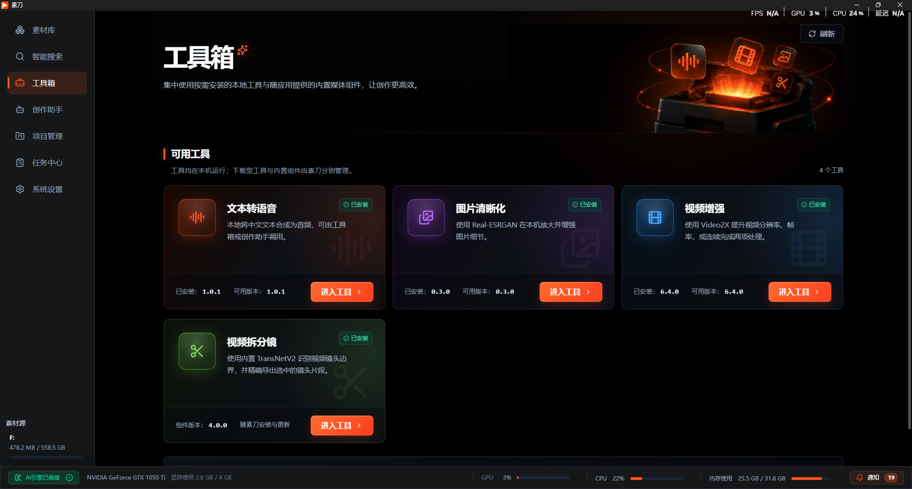
工具箱以卡片列表展示素刀已经适配的本地创作工具，当前包括“文本转语音”“图片清晰化”“视频增强”和“批量视频拆分镜”。前三项需要在对应卡片上按需安装；安装完成后，卡片会显示“进入工具”，有新版本时同一位置也会显示更新入口。下载、校验和解压过程会显示进度，也可以在任务中心查看。“批量视频拆分镜”直接使用随素刀安装的 TransNetV2 与 ffmpeg/ffprobe 组件，不需要在工具箱单独下载；组件缺失时请到“系统设置 → 组件管理”修复。
工具安装包需要由素刀服务端发布。如果卡片没有可安装版本，请稍后刷新或确认远程服务配置，不要自行把来历不明的可执行文件复制到工具目录。
文本转语音
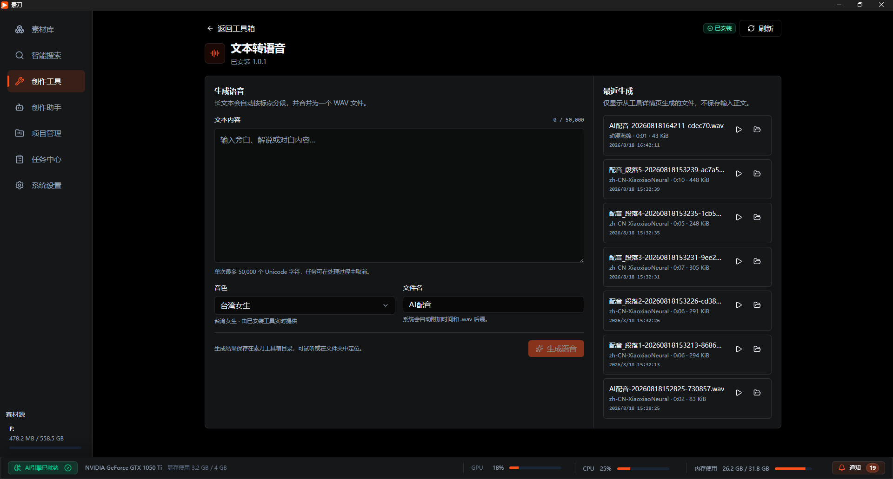
安装完成后：
- 从工具卡片进入“文本转语音”详情，在“文本内容”中输入旁白、解说或对白，单次最多 50,000 个字符。
- 从本机工具实时返回的音色列表中选择音色，并填写便于识别的文件名。
- 点击“生成语音”。长文本会自动分段，完成后合并为一个 WAV 文件。
- 在“最近生成”中试听文件，或点击“在文件夹中显示”定位结果。
创作助手也可以调用这个工具。安装工具后，发送消息前可以在对话输入区打开“音色”弹窗，从当前音色列表中选择，并按名称、语言或音色标识筛选；没有安装文本转语音工具时不会显示该入口。素刀会记住确认的选择，下次新建对话时默认继续使用。如果上次音色已经不在当前列表中，则自动改用列表中的第一个音色。它生成的 WAV 文件会直接保存在当前会话工作区，不会进入工具箱输出目录或“最近生成”列表。当前会话已经选择草稿时，创作助手默认把生成结果加入从 0 秒开始的独立“AI配音”音频轨道；如果你明确要求只生成文件，则不会修改草稿。即使导入草稿失败，已经生成的 WAV 文件也会保留。
图片清晰化
“图片清晰化”使用 Real-ESRGAN 在本机放大图片并增强细节：
- 选择一张 JPG、PNG 或 WebP 图片。
- 按内容选择“通用照片与实拍”或“动漫与插画”模型。
- 图片固定放大至模型原生的 4×，可选择输出格式。显存较小时可以设置分块；TTA 可能改善细节一致性，但会明显增加处理时间。透明图片无法安全写入 JPG 时，结果会保存为 PNG。
- 点击“开始增强”，完成后可在“最近生成”中打开结果或在文件夹中显示。
视频增强
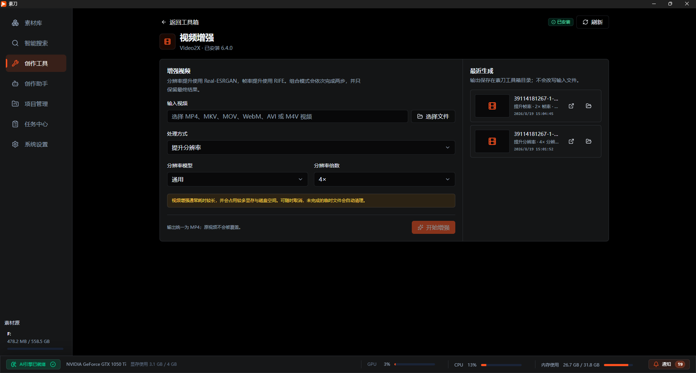
“视频增强”使用 Video2X 在本机处理视频。你可以只提升分辨率、只提升帧率，或选择“先提升分辨率，再提升帧率”。动漫视频分辨率模型支持 2×/3×/4×，通用实拍和动漫高质量模型仅支持 4×；帧率提升使用 RIFE，可选择 2×/4× 帧率和 UHD 模式。当前结果统一输出为 MP4。
批量视频拆分镜
“批量视频拆分镜”在本机自动识别视频中的全部镜头并逐帧精确导出。导入前可在工具详情页右上角点击“导出设置”，选择“视频同级目录”或“指定文件夹”。选择会保存在本机，仅影响之后导入的视频，已经排队的任务保持原保存位置。
- 将多个 MP4、MOV、MKV、AVI、WebM 或 M4V 视频拖入导入区，也可以点击选择多个视频。
- 导入后立即排队，逐个自动处理；处理中可以继续追加视频。使用与素材库自动分镜一致的默认阈值（当前为 0.5），无需选择阈值、预览或勾选镜头。
- 在任务列表查看各视频的进度、完成、跳过或失败原因，需要时可取消任务。“清空历史”左侧的“取消全部”取消本工具所有未结束任务；“重试失败”只重试失败项。失败或已取消的任务也可逐条点击“重试”，沿用该任务原来的源视频和导出位置，并更新原任务记录。
- 完成后点击“打开保存位置”。默认保存在视频同级目录；指定文件夹时保存在所选文件夹内。两种方式都会按视频文件名去掉扩展名创建子文件夹，例如
旅行.mp4对应旅行/，片段按旅行_shot_0001.mp4顺序命名。
同名文件夹或文件已存在时会跳过该视频并提示，继续处理其他视频，不覆盖已有文件；手动重试同样遵循此规则。重复导入正在排队或处理的视频会提示已在队列。应用重启不会自动重跑中断的任务，可手动重试。旧版本历史缺少重试所需信息时，请重新导入视频。
清空历史只删除任务与分析记录，保留源视频和已生成文件；有活动任务时暂不可清空。工具不会主动将结果加入素材库；如果保存位置位于已监听的素材源内，会按该素材源的原有规则扫描。
图片增强、视频增强和批量视频拆分镜都不会覆盖输入文件。图片与视频增强结果保存在素刀工具箱目录，批量视频拆分镜结果保存在源视频同级或指定导出文件夹内的同名子文件夹；取消或失败时会清理未完成结果，视频组合处理还会清理中间文件。两项增强依赖支持 Vulkan 的显卡，视频处理尤其可能消耗较长时间、较多显存和磁盘空间；视频拆分镜使用内置 TransNetV2 和 FFmpeg，不要求先安装 Video2X。
工具类型和界面由客户端预先提供，服务端记录的是版本和下载地址，不会通过服务端数据动态出现未经客户端适配的新工具。图片、视频和文本内容都在本机交给已安装工具处理；远程服务不接收这些输入内容或本机输入路径。输入正文不会写入本地数据库或任务记录。
14. 任务中心
任务中心用于观察后台任务状态、定位失败素材，并执行重试或恢复操作。
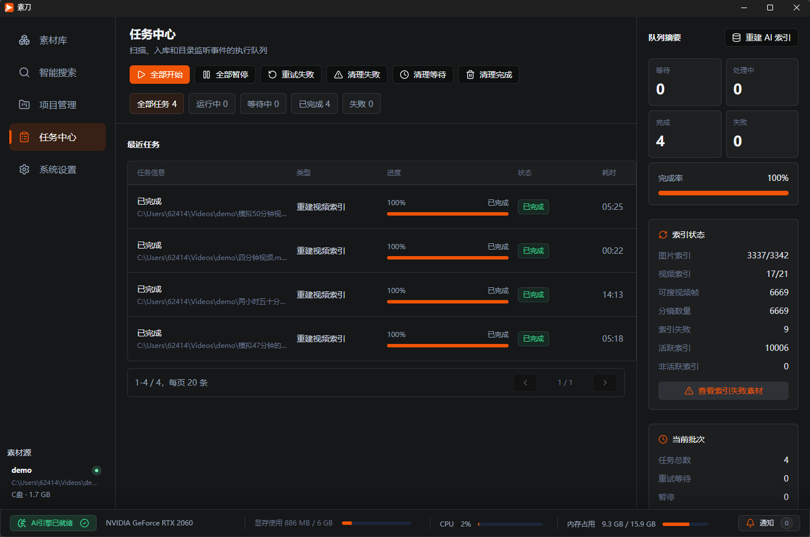
任务中心覆盖这些类型：
- 扫描素材源。
- 发现素材。
- 素材入库。
- 重扫素材源。
- 标签同步：将素材与分镜标签同步到本地搜索索引。
- 重试索引失败任务。
- 重建语音索引。
- 删除语音索引。
你可以按状态筛选任务，例如全部、等待、处理中、完成和失败。对于失败素材，可以查看文件、类型和失败原因，再根据情况修复源文件、恢复外接盘、重试任务或重新建库。
编辑标签后，本地标签先保存，搜索索引在后台更新。人物索引和标签同步会等待其他可运行任务结束；两者都可运行时，先同步标签，再更新人物索引。新任务到来时，当前小批完成后让路。同一轮标签同步合并为一条任务，显示已同步数量、等待、处理中、完成或失败状态。搜索提示“部分标签仍在同步”时，可以点击“查看标签同步任务”查看进度。服务繁忙或写入失败会自动延后重试；连续失败后，可检查本地 AI 组件并使用“重试失败”。索引尚未就绪时会继续等待，应用重启会恢复中断的同步任务。任务列表按标签同步筛选时，队列操作仍作用于全部任务。
没有任务时，任务中心会提示：启动素材扫描后，扫描和入库任务会显示在这里。
15. 系统设置
系统设置用于管理本地运行环境、素材源和全局配置。
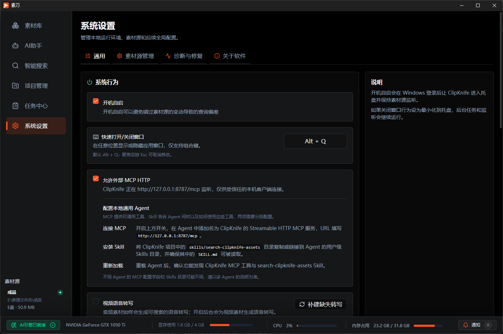
常规设置包括：
- 开机自启：Windows 登录后让 ClipKnife 进入托盘并保持素材源监听。
- 关闭窗口行为：每次询问、最小化到托盘或直接退出。
- 音频语音转写：控制是否为音频素材生成可搜索语音转写。
- 视频语音转写：控制是否为视频素材生成可搜索语音转写。
- 补建缺失转写：为缺失语音转写的素材创建后台任务。
AI 与媒体组件设置会展示 TransNetV2、ffmpeg/ffprobe、imsearch 和语音转写组件等本地能力。语音区域会显示固定模型、当前后端、时间戳精度、显存/磁盘与安装状态，并提供安装、重试、取消和删除入口。它们的状态会影响分镜、抽帧、视觉检索、相似检索和语音检索是否可用。组件管理会同时展示 imsearch 与 TransNetV2 的当前版本、运行版本和当前软件版本的配套版本。
如果 imsearch 或 TransNetV2 与当前软件版本的配套版本不一致，组件管理可以直接下载、校验并安全替换服务端发布的配套组件；也可以手动选择带版本清单的压缩包作为备用方式。替换会等待相关任务结束，新组件验证失败时会恢复旧组件。
系统设置还包含素材源管理、诊断与修复、系统更新、通知和关于等入口。
MCP 与外部 Agent
MCP 服务默认关闭，只面向受信任的本机 Agent。在系统设置中开启后，复制实际服务地址，再为每个 Agent 创建独立授权，选择需要的能力、素材源与剪映草稿目录。完整凭据仅在创建时显示一次，遗失后需撤销并重新创建；关闭服务保留授权配置，撤销授权不会删除素材和产物。
Agent 可调用搜索、分类词云、本地转写、视觉描述、人物与分镜分析、配音、剪映及外部素材能力。素材源授权限制库内访问，Agent 也可直接读取本机媒体文件进行分析；普通产物自动保存在应用数据目录。长任务可查询、取消和显式重试。旧 MCP 接入需要重新授权并更新工具配置，内置创作助手不依赖外部 MCP 开关。
本地转写、视觉和人物分析不会自动回退到外部模型；外部素材检索与下载仍需联网。请只把凭据交给可信客户端，不要将本机服务暴露到公网。
迁移应用数据目录
建库后可以打开“系统设置 → 数据与备份 → 迁移应用数据目录”，选择其他本地固定磁盘上的空目录。素刀会等待正在进行的任务暂停，复制并校验数据库、AI 组件、搜索索引、缓存、项目和日志。页面会显示复制进度；在切换位置前，你可以取消迁移并继续使用旧目录。
复制校验完成后，点击“切换并重启”。新目录启动验证成功后，素刀会在后台确认旧应用数据根目录内容未变化，再尝试清理；无法安全确认或清理失败时会保留旧目录供排查。若原组件目录单独放在旧根目录之外，组件会复制到新目录的 external，原来的独立组件目录会保留。复制或首次切换失败时会继续使用旧目录；如果新目录首次启动验证失败，目标副本会保留以便排查。已经验证成功的新目录不会因为旧目录清理失败而回退。原始图片、视频和音频仍留在各自的素材源，不会随应用数据迁移。
16. 诊断与修复
诊断用于检查本地环境、素材源、任务队列、索引和搜索服务是否可用。
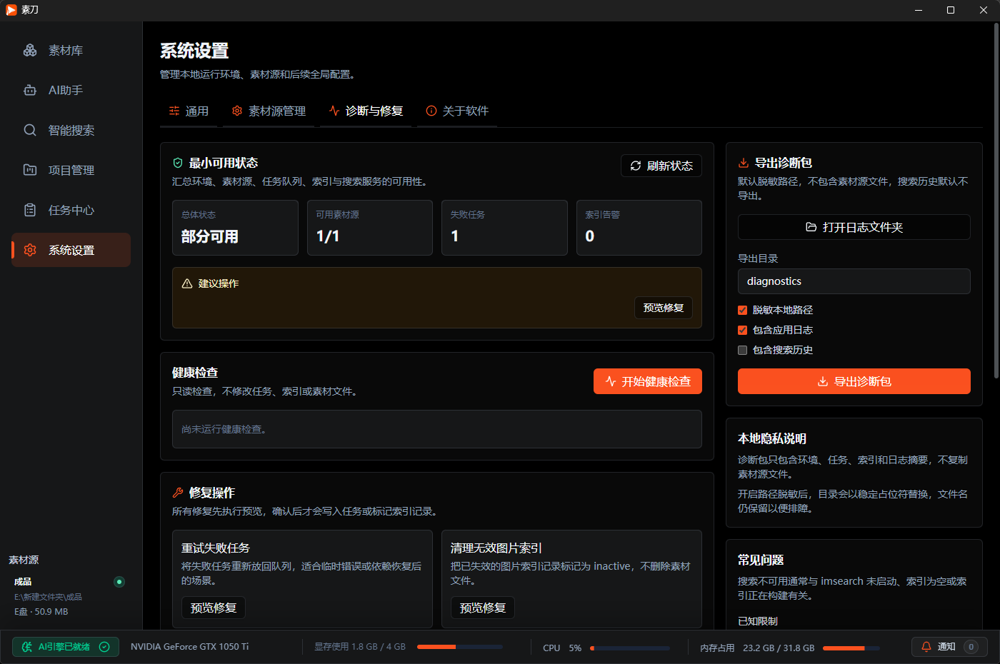
你可以先执行只读健康检查。只读检查不会修改任务、索引或素材文件。
修复操作会先执行预览，展示影响范围、是否可执行和预计任务数。确认后才会更新记录或安排任务。
常用操作包括重试失败任务、修复搜索索引差异和恢复搜索服务。恢复搜索服务会启动或重新连接本地服务。建议操作会在对应操作旁说明原因。
高级维护默认折叠，包括清理失效图片索引、清理失效视频索引、重建完整搜索索引和压缩搜索索引。完整重建会重新处理可用素材，生成新索引，完成后切换；任务数量在入队后确定。素材源不可访问或已有建库任务时，应先处理这些问题。
文件夹模式还可在“系统设置 → 诊断与修复 → 高级维护”使用“清除非素材源索引”，清理已不属于当前素材源的素材记录、索引、视频分镜和可搜索视频帧。确认弹窗会说明清理范围；没有素材源时会提示清理全部剩余索引。后台任务等待已有扫描和索引结束后，按当时的素材源范围检查，保留仍属于当前素材源的内容，包括离线来源，不删除原始素材文件。提交后可在诊断页或任务中心查看进度。
索引差异修复和压缩会进入任务中心，可查看进度、失败和停止状态。入队后如果队列已经暂停，需要在任务中心恢复。压缩收到停止请求时，会等待当前步骤结束后停止。重试范围如果在预览后发生变化，需要重新预览确认。
导出诊断包用于问题排查。诊断包默认脱敏路径，不包含素材源文件，搜索历史默认不导出。导出成功后即使文件夹未能自动打开，也可以使用页面显示的导出路径找到文件。
17. 更新、通知和关于
系统设置提供检查更新入口。ClipKnife 可以检查 stable 发布渠道中的最新版本；每个版本统一使用一个 Windows 安装包，不再区分全量包和增量包。存在可用更新时，你可以查看更新说明并点击一次“立即更新”。
如果当前版本落后多个已发布版本，更新提示会按版本从新到旧列出期间所有更新说明，避免遗漏中间版本内容。
检查更新还会比较本机 imsearch、TransNetV2 与目标版本的配套组件。v2.5.0 会先准备并校验所需文件，再在安装阶段替换组件和交接软件安装包；准备期间不替换正在运行的组件。组件校验或安装失败会阻止后续安装，并按恢复记录处理。主程序已是最新版时，也可以单独更新不匹配的组件。
安装包下载完成前可以取消；安装程序启动后不能再由应用取消。首次从不含自动更新能力的旧版本迁移时，仍需手动下载安装一次新版，后续更新才可自动完成。
后台下载与下次启动更新
v2.5.0 已支持后台准备更新，升级至该版本后生效。“系统设置 → 关于软件”的更新区域提供“自动更新”开关、说明和当前状态，默认开启。发现新更新时仍显示更新弹窗，可查看说明并手动更新；弹窗不提供自动更新开关或暂停、继续、重试等自动更新按钮，打开期间不启动自动下载。
关闭更新弹窗后，只有自动更新开关开启时，才在后台下载安装包和必需配套组件。下载和校验时可继续使用当前版本，切换页面或收起到托盘不会中断准备，退出素刀后停止。下载和后台校验都完成后，等待下次启动安装，不主动重启；从托盘恢复窗口不会触发安装。关闭自动更新开关会停止自动下载，也不会在下次启动时自动安装。该流程不自动下载可选工具及语音、视觉模型；仅使用共享素材库时，只准备主程序安装包。
检查更新时只判断版本、更新清单和组件元数据，不提前扫描完整模型和运行库；检查超时会显示失败并允许重试。更新准备先下载，再在后台校验；小包所需的旧运行库若损坏，会自动补下载并验证对应基础包。设置中展示“自动更新”或“手动更新”标识、当前组件、下载或校验阶段及最终结果；能够计算时显示该阶段的进度和处理量，未知总量时不显示虚构百分比。
无论自动更新开关是否开启，都可手动点击“立即更新”，复用同一份下载和已校验缓存，准备完成后安全重启安装。关闭自动更新开关或更新弹窗都不会取消已经主动发起的手动更新；安装程序启动后不能再由素刀取消。启动安装前会联网确认发布仍可用，在线复核最多等待 10 秒；断网或超时继续启动现有版本，稍后重试。安装前仍会校验文件与签名；校验失败或版本撤回不会安装。组件会保留恢复记录，直到新版本检查通过；失败时尝试恢复，无法安全恢复时保留文件并提示处理。
手动更新从准备到重启后的安装、健康检查始终属于同一次任务，不会转成自动下载。手动下载中断或失败后保留可复用缓存，等待手动重试。启动页会说明下载校验已完成、仍需安装及确认结果；软件安装器可能再次重启素刀，这仍是同一次更新。成功后显示完成状态，本次启动不紧接着发起另一轮后台更新检查。
组件更新的健康检查使用独立临时索引验证组件和模型；原搜索索引如果需要断电恢复，仍由正常恢复流程处理，不会仅因此回滚组件，也不会清空原索引。
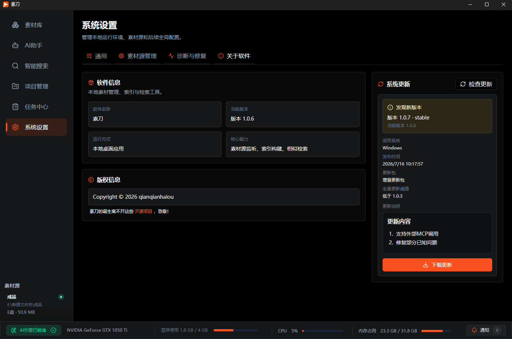
通知入口用于展示来自远程服务的通知。通知可以刷新、标记已读，并展示未读数量。通知类型包括信息、警告和更新提示。
关于页展示产品名称、版本、核心能力描述和开源项目致谢。
18. 隐私与本地文件边界
ClipKnife 是本地优先产品。素材扫描、索引、搜索、分镜、转写，以及工具箱中的文本转语音、图片清晰化、视频增强和视频拆分镜都在本机处理。
请记住这些边界：
- 移除素材源不会删除原始文件。
- 从项目中移除素材不会删除原始文件。
- 视频分镜编辑不会直接破坏原始视频文件。
- 诊断包默认脱敏路径，不复制用户素材源文件。
- 搜索历史默认不导出。
- 外接盘断开或路径失效时，ClipKnife 会提示异常，但不应影响其他素材源。
- 工具箱不会把输入正文、图片、视频或本机输入路径发送给素刀远程服务。
- 创作助手使用你配置的创作模型供应商时，会按任务需要发送对话内容、系统上下文、工具结果、已有视觉描述，以及你明确选择的本地文件路径。本地视觉来源的图片和采样帧在本机处理；启用外部来源后，助手还可发送一张图片或分镜最多三张采样帧给你配置的视觉模型供应商，但不会发送完整视频。本地生成的描述文字仍可能进入创作模型上下文，不代表创作助手全部离线。API Key 只保存在当前设备。
- 使用外部素材搜索时，请求会发送给相应的第三方来源；选中的文件会下载到当前会话工作区。
素刀远程服务用于检查更新、拉取通知、提供公开模型供应商目录和工具版本目录等辅助能力，不接收创作助手处理的原始媒体文件，也不承担本地素材内容处理职责。
19. 已知限制
当前产品边界包括：
- 不包含账号系统。
- 不包含云同步。
- 不包含多人协作。
- 不包含素材交易市场；外部素材搜索只是对第三方开放来源的可选检索。
- 不包含商业化付费逻辑。
- 不承诺自动理解完整视频语义，视频视觉检索主要基于分镜代表帧。
- 搜索结果依赖本地索引质量，索引未完成或失败会影响可搜索范围。
- 搜索服务不可用、模型组件缺失或外接盘断开时，相关能力会降级或提示错误。
- 创作助手需要可用的模型供应商；外部素材搜索还受第三方服务、网络和授权条件影响。
- 剪映草稿导出依赖本机剪映桌面端，进入导出阶段后不能取消。
- 工具箱中按需下载的工具安装和更新需要连接素刀远程服务；图片和视频增强需要支持 Vulkan 的显卡。视频拆分镜依赖随应用提供且状态正常的 TransNetV2 与 ffmpeg/ffprobe 组件。
20. 建议的日常使用方式
- 素材源尽量选择稳定路径，外接盘使用固定盘符会更容易维护。
- 添加整盘符前确认排除规则，避免误扫系统目录或缓存目录。
- 大批量导入后可以先搜索已经完成索引的部分；需要完整结果时再等待索引任务结束。
- 搜索无结果时，先换一个更具体的描述，再检查任务中心。
- 处理失败素材时，优先确认源文件是否存在、外接盘是否连接、索引服务是否可用。
- 对重要项目，导出片段后再进入后续剪辑流程。
- 使用创作助手前先确认默认模型、剪映目录和素材范围，重要草稿建议使用不重名的新副本。
- 调用外部素材时，发布前核对来源、许可和署名要求。
- 执行图片或视频增强前预留足够的显存、磁盘空间和处理时间。